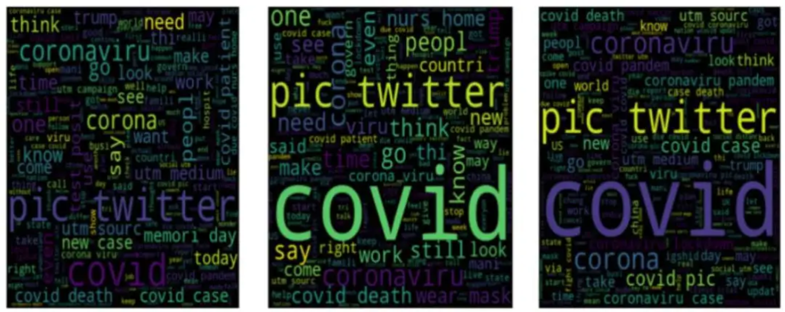
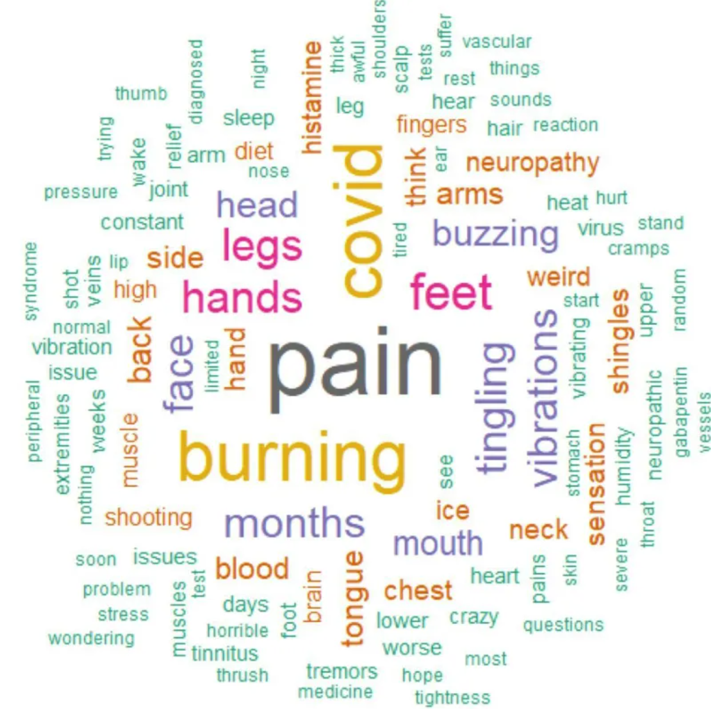

# Install packages
if (!requireNamespace("wordcloud2", quietly = TRUE)) {
install.packages("wordcloud2")
}
if (!requireNamespace("jiebaRD", quietly = TRUE)) {
install.packages("https://cran.r-project.org/src/contrib/Archive/jiebaRD/jiebaRD_0.1.tar.gz")
}
if (!requireNamespace("jiebaR", quietly = TRUE)) {
install.packages("https://cran.r-project.org/src/contrib/Archive/jiebaR/jiebaR_0.11.1.tar.gz")
}
if (!requireNamespace("dplyr", quietly = TRUE)) {
install.packages("dplyr")
}
if (!requireNamespace("tidyverse", quietly = TRUE)) {
install.packages("tidyverse")
}
if (!requireNamespace("htmlwidgets", quietly = TRUE)) {
install.packages("htmlwidgets")
}
if (!requireNamespace("webshot2", quietly = TRUE)) {
install.packages("webshot2")
}
# Load packages
library(wordcloud2)
library(jiebaR) # Breaking Chinese text into words
library(dplyr)
library(tidyverse)
library(htmlwidgets)
library(webshot2)Wordcloud
A word cloud is a visual representation of text words, which allows you to clearly see the keywords (high-frequency words) in a large amount of text data.
Example
The image above shows a word cloud for an English text. The more frequent a word is, the larger it is. We can clearly identify the most frequent words from the word cloud, which are also the key words in the text. Displaying a large text as a word cloud allows us to understand the main content of the text in a shorter time.
Setup
System Requirements: Cross-platform (Linux/MacOS/Windows)
Programming Language: R
Dependencies:
wordcloud2,jiebaRD,jiebaR,dplyr,tidyverse,htmlwidgets,webshot2
sessioninfo::session_info("attached")─ Session info ───────────────────────────────────────────────────────────────
setting value
version R version 4.5.2 (2025-10-31)
os Ubuntu 24.04.3 LTS
system x86_64, linux-gnu
ui X11
language (EN)
collate C.UTF-8
ctype C.UTF-8
tz UTC
date 2025-12-27
pandoc 3.1.3 @ /usr/bin/ (via rmarkdown)
quarto 1.8.26 @ /usr/local/bin/quarto
─ Packages ───────────────────────────────────────────────────────────────────
package * version date (UTC) lib source
dplyr * 1.1.4 2023-11-17 [1] RSPM
forcats * 1.0.1 2025-09-25 [1] RSPM
ggplot2 * 4.0.1 2025-11-14 [1] RSPM
htmlwidgets * 1.6.4 2023-12-06 [1] RSPM
jiebaR * 0.11.1 2025-03-29 [1] CRAN (R 4.5.2)
jiebaRD * 0.1 2015-01-04 [1] CRAN (R 4.5.2)
lubridate * 1.9.4 2024-12-08 [1] RSPM
purrr * 1.2.0 2025-11-04 [1] RSPM
readr * 2.1.6 2025-11-14 [1] RSPM
stringr * 1.6.0 2025-11-04 [1] RSPM
tibble * 3.3.0 2025-06-08 [1] RSPM
tidyr * 1.3.2 2025-12-19 [1] RSPM
tidyverse * 2.0.0 2023-02-22 [1] RSPM
webshot2 * 0.1.2 2025-04-23 [1] RSPM
wordcloud2 * 0.2.1 2018-01-03 [1] RSPM
[1] /home/runner/work/_temp/Library
[2] /opt/R/4.5.2/lib/R/site-library
[3] /opt/R/4.5.2/lib/R/library
* ── Packages attached to the search path.
──────────────────────────────────────────────────────────────────────────────Data Preparation
The Chinese texts used were 25 Chinese abstracts on immunotherapy for lung cancer retrieved from CNKI; the English texts used were the demoFreq dataset provided by R and 24 English abstracts on immunotherapy for lung cancer retrieved from PubMed.
# 1.Chinese abstract text
words <- read.csv("https://bizard-1301043367.cos.ap-guangzhou.myqcloud.com/words.txt",header = FALSE,sep="\n")
words <- as.character(words)
head_words <- substr(words, start = 1, stop = 20)
head_words[1] "肺癌可分为非小细胞肺癌(NSCLC)和小"# 2.demoFreq dataset
data <- demoFreq
head(data) word freq
oil oil 85
said said 73
prices prices 48
opec opec 42
mln mln 31
the the 26# 3.English abstract text
words_english <- read.csv("https://bizard-1301043367.cos.ap-guangzhou.myqcloud.com/words_english.txt",header = FALSE,sep="\n")
words_english <- as.character(words_english)
head_words_english <- substr(words_english, start = 1, stop = 20)
head_words_english[1] "Persistent inflammat"Convert text into phrases/words
Tip
Note: You can directly use the sample data demoFreq, so you don’t need to understand the text preprocessing process. The following mainly uses Chinese text for drawing.
Chinese text
# Use the jiebaR package to split the text into phrases
words_seg <- words %>%
segment(worker()) %>% # Split text into words
tibble(word = .) %>%
filter(nchar(word) > 1) %>% # Remove single-word phrases
count(word, sort = TRUE) %>% # Statistical word frequency
filter(!str_detect(word, "[0-9]+")) %>% # Remove numbers
slice_max(n, n = 50) # Select words with high frequency
head(words_seg)# A tibble: 6 × 2
word n
<chr> <int>
1 患者 153
2 治疗 79
3 免疫治疗 64
4 NSCLC 55
5 细胞 55
6 肺癌 54English text
# Split directly into single words
words_english %>%
str_replace_all(",", " ") %>% # Replace punctuation marks with spaces
str_replace_all("\\.", " ") %>%
str_replace_all("\\(", " ") %>%
str_replace_all("\\)", " ") %>%
str_split(" ", simplify = TRUE) %>% # Split text into words
.[nchar(.) > 1] %>% # Remove words of length 1 or 0
tibble(word = .) %>%
filter(!grepl("[0-9]+", word)) %>% # Remove numbers
table() %>%
as.data.frame() %>%
arrange(desc(Freq)) %>%
slice(1:60) -> words_english_sep # Select the top 60 words
# Remove meaningless words based on the word list
words_english_sep1 <- words_english_sep[c(-1, -2, -3, -4, -5, -6, -7, -14, -20, -22, -23, -24, -26, -27, -29, -30, -31, -33, -34, -35, -36, -44, -46, -53, -55),]
head(words_english_sep1) word Freq
8 patients 56
9 immunotherapy 51
10 cancer 46
11 NSCLC 46
12 lung 44
13 cell 40The figure shows the words with higher frequency and their frequency after being split into words.
Visualization
1. Basic Plotting
# Basic Plotting
BasicPlot <- wordcloud2(data = words_seg, size = 1)
BasicPlotThis figure is a basic word cloud diagram, which can be drawn by using the wordcloud2 function and word frequency data.
2. Set Color
color parameter
# (1) Set text color
Setcolors <- wordcloud2(data = words_seg, size = 1, color = "random-dark")
SetcolorsThis image uses the color parameter to set the word color to a random dark tone.
Tip
Key parameter: color
The color of the text. The options are “random-dark”, “random-light”, or you can use a vector to define a custom color.
Custom colors
# (2) Vector custom color
CustomizeColors <- wordcloud2(
data = words_seg, size = 1,
color = rep_len(c("green", "blue"),nrow(words_seg)))
CustomizeColorsIn this figure, the rep_len() function is used to repeat two colors to form a vector for the definition of word color.
Background Color
# (3) Set the background color
BackgroundColor <- wordcloud2(data = words_seg, size = 1, color = "random-light",
backgroundColor = "black")
BackgroundColor
This figure sets the color of the word cloud to the background color through backgroundColor="black" in the code.
3. Set shape
# Set as star
SetShape <- wordcloud2(data = words_seg, size = 0.5, shape = "star")
SetShapeThis figure sets the shape of the word cloud to a star by shape = 'star' in the code. In addition to the star shape, there are many other shapes that can be used to make the word cloud drawing more personalized.
Tip
Key parameter: shape
The shape of the word cloud. The options are ‘circle’ (default, original shape), ‘cardioid’ (heart shape), ‘diamond’ (diamond shape), ‘triangle-forward’ (triangle-forward), ‘triangle’ (triangle), ‘pentagon’ (pentagon), ‘star’ (star shape).
4. Word Cloud Rotation
Fixed rotation
# (1) Set a certain rotation angle (the maximum and minimum angles are set to the same, and the rotation ratio is 1)
SpecificRotation <- wordcloud2(data = words_seg, size = 1, minRotation = -pi / 6,
maxRotation = -pi / 6, rotateRatio = 1)
SpecificRotation
The direction of the words used in this figure is rotated 30 degrees clockwise. The maximum and minimum rotation angles need to be set to the same, and the rotation ratio is set to 1.
Tip
Key parameters: minRotation/maxRotation/rotateRatio
-
minRotation: Minimum rotation angle. -
maxRotation: Maximum rotation angle. -
rotateRatio: The ratio of word rotation.rotateRatio = 1will rotate all words.
Random rotation
# (2) Random rotation
RandomRotation <- wordcloud2(data = words_seg, size = 1, minRotation = -pi / 6,
maxRotation = pi / 6, rotateRatio = 0.8)
RandomRotation
The rotation angle of this word cloud is between (-30°, 30°), the angle is selected randomly, and the rotation ratio is 0.8.
5. English word cloud
Using demoFreq data
# Using demoFreq data
EnglishWordcloud1 <- wordcloud2(data = demoFreq[1:75, ], size = 1)
EnglishWordcloud1
The word cloud in this figure uses the first 75 items of the demoFreq dataset for plotting. The plotting code for the English word cloud and the Chinese word cloud is the same.
Use PubMed abstract text
# Use PubMed abstract text
EnglishWordcloud2 <- wordcloud2(data = words_english_sep1, size = 0.6)
EnglishWordcloud2
The word cloud in the figure was drawn using PubMed abstract text and shows keywords for the topic of immunotherapy for lung cancer.
Applications

The visualization depicted in the figure shows that the bold, large font in the World Cloud visualization is intended to map the number of words that are the subject of each article abstract in maritime security research. The names of several countries, such as China, India, Indonesia, Australia, and the United States, are included in the World Cloud because most articles discuss certain countries or regions. [1]

The three word clouds of DATA_SET 1 in the figure show the most frequently used words in positive, negative, and neutral emotions, respectively, verifying the author’s view that social media cannot provide netizens with appropriate courses for dealing with epidemics such as COVID-19. [2]

The word cloud shown here was created based on 162 comments from a Survivor Corps poll that asked respondents about vibrating or buzzing sensations and neuropathic pain. The word cloud shows that pain, burning, COVID-19, legs, hands, and feet were the most common terms mentioned in the comments. The word cloud includes terms related to sensations like burning and symptoms like shingles and thrush. [3]
Reference
[1] KISMARTINI K, YUSUF I M, SABILLA K R, et al. A bibliometric analysis of maritime security policy: Research trends and future agenda[J]. Heliyon, 2024,10(8): e28988.
[2] CHAKRABORTY K, BHATIA S, BHATTACHARYYA S, et al. Sentiment Analysis of COVID-19 tweets by Deep Learning Classifiers-A study to show how popularity is affecting accuracy in social media[J]. Appl Soft Comput, 2020,97: 106754.
[3] MASSEY D, SAWANO M, BAKER A D, et al. Characterisation of internal tremors and vibration symptoms[J]. BMJ Open, 2023,13(12): e77389.